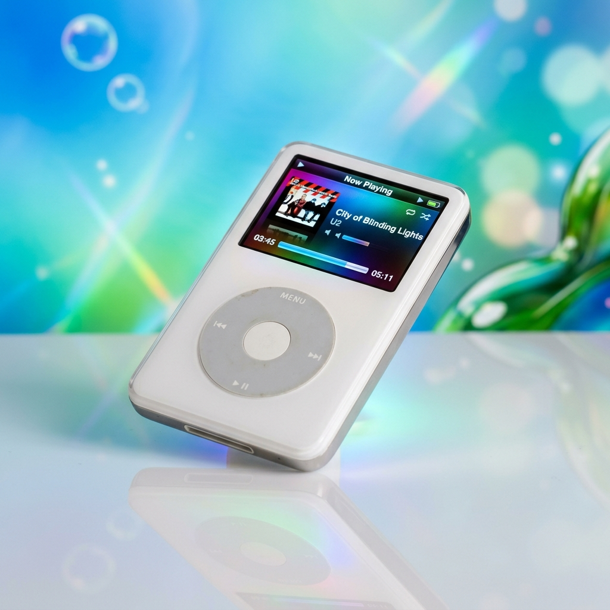
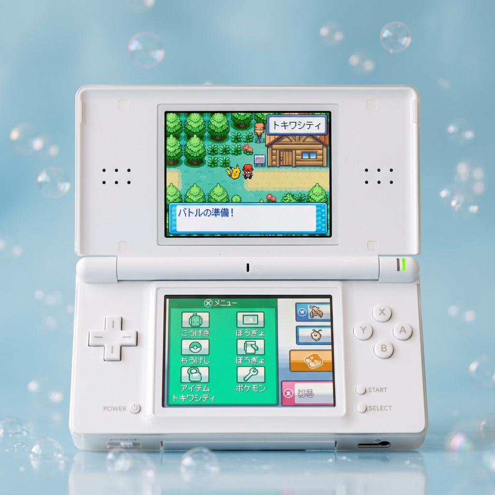
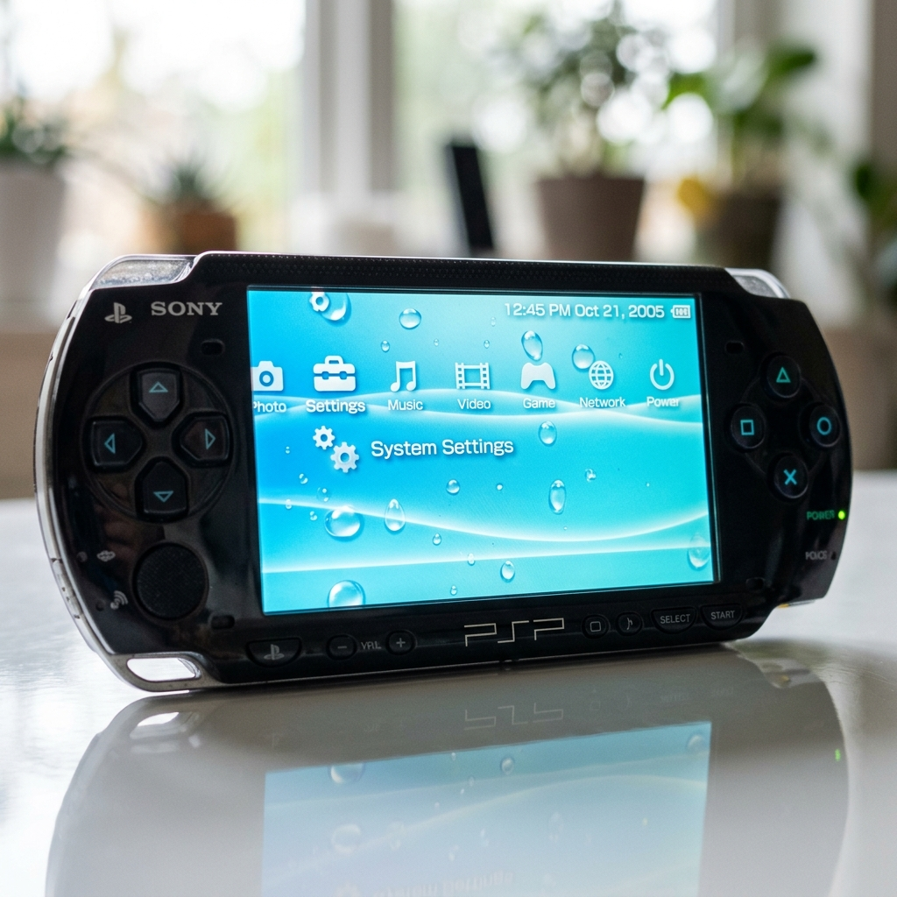

Por qué el Flat Design le robó el alma al software.
En la era de Windows Vista, Mac OS X Tiger e iOS 6, cada control en pantalla tenía volumen, brillo y textura. Un botón no era un rectángulo gris plano con texto: era una cápsula de vidrio que proyectaba una sombra suave sobre el fondo. Los iconos parecían objetos que podías sostener en tus manos.
El diseño plano actual optimizó la carga y facilitó el trabajo a las corporaciones, pero a costa de volver cada pantalla estéril e indistinguible. El Frutiger Aero representaba un futuro cálido y lleno de posibilidades, no un formulario corporativo en blanco y negro.
Vidrio esmerilado, reflejos de luz y refracción óptica que daban profundidad tridimensional.
Cielos despejados, hojas verdes con rocío y ondas acuáticas integradas al entorno digital.
La creencia sincera de que el futuro y la tecnología nos llevarían a un mundo más luminoso y limpio.